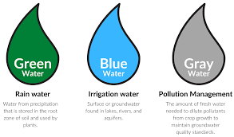

It is important for individuals, households, businesses and countries to ask “What is a water footprint?” as they do an assessment of water use patterns at different levels.
Fresh water is vital to life, but as the world's population grows, so does its use of water. It takes water – a lot of it – to produce food, to make energy and to manufacture consumer products. This is what’s known as virtual water and it’s important to do an assessment of water patterns at different levels of water use.
Globally, the increase is due primarily to increasing virtual water use, as more people consume more water-intensive food, electricity and consumer goods, putting increasing pressure on water resources. Strained resources are a source of both concern and conflict in the arid parts of the world – including the US – where food is grown, goods are manufactured and water is already in short supply. Entities at many levels have started doing an assessment of water use patterns at different levels and asked, “What is a water footprint?”
Water footprints help individuals, businesses and countries because they reveal water use patterns, from the individual level all the way to the national level. They shine a light on the water used in all the processes involved in manufacturing and producing our goods. They also account for the amount of water contaminated during manufacturing and production.
These footprints give everyone – from individuals to business managers to public officials – a solid frame of reference that helps the world be more efficient and sustainable with water use. By understanding our water footprints, we can appreciate the role water plays in everyone’s lives.
A water footprint is measured in terms of the volume of water consumed, evaporated and polluted. The Water Footprint Network, whose research provides the data splits water footprints into three corresponding categories:
Blue Water Footprint: The amount of surface water and groundwater required (evaporated or used directly) to produce an item.
Green Water Footprint: The amount of rainwater required (evaporated or used directly) to make an item.
Grey Water Footprint: The amount of freshwater required to dilute the wastewater generated in manufacturing, in order to maintain water quality , as determined by state and local standards.